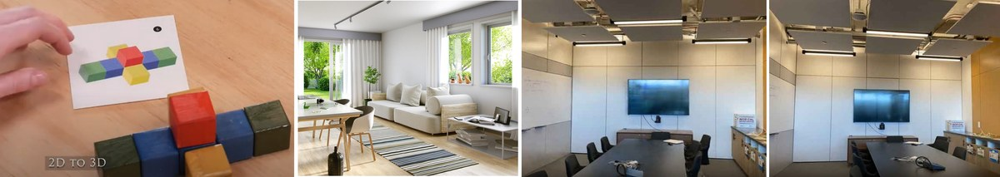
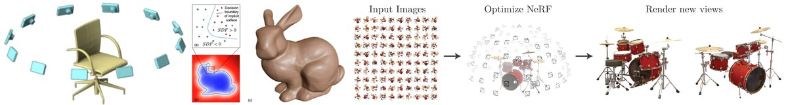
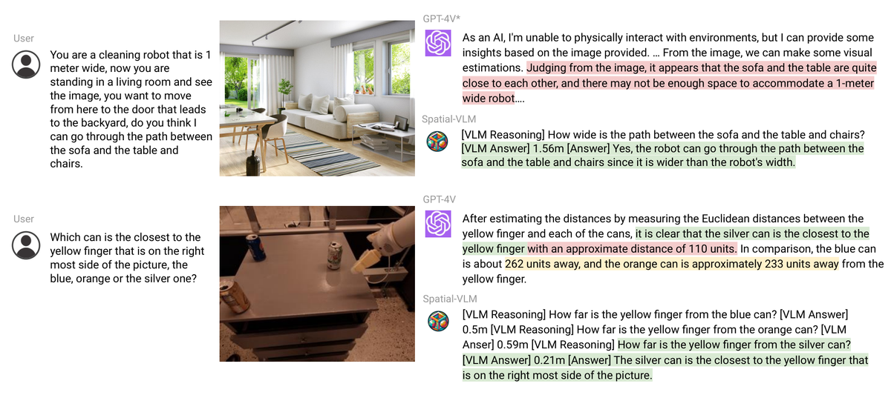
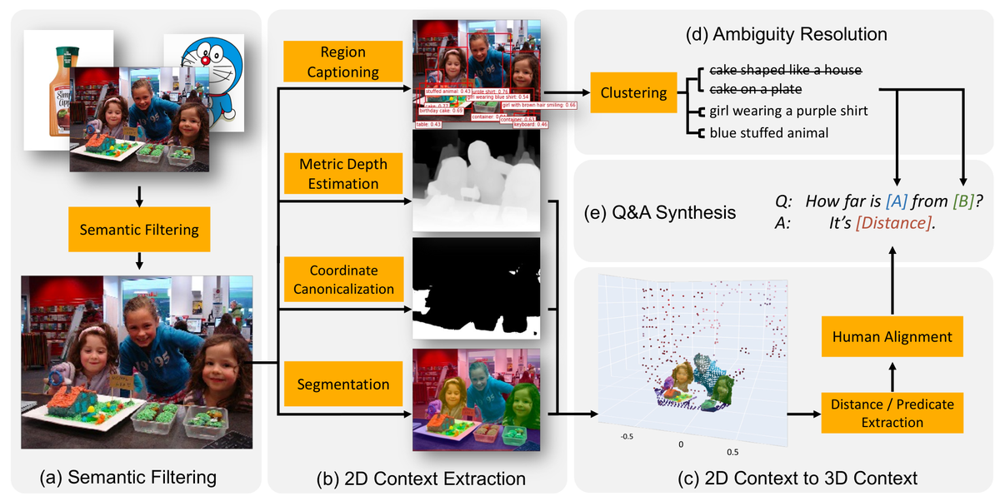
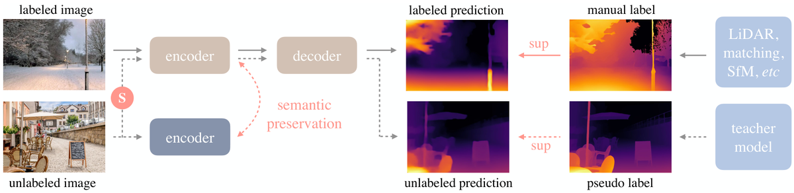
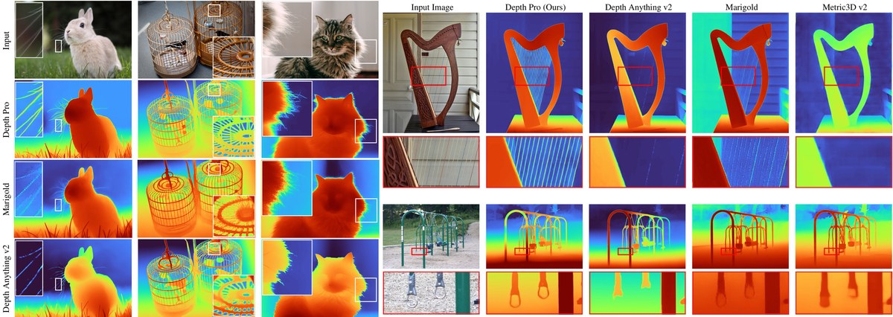
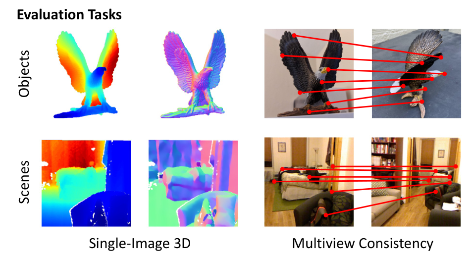
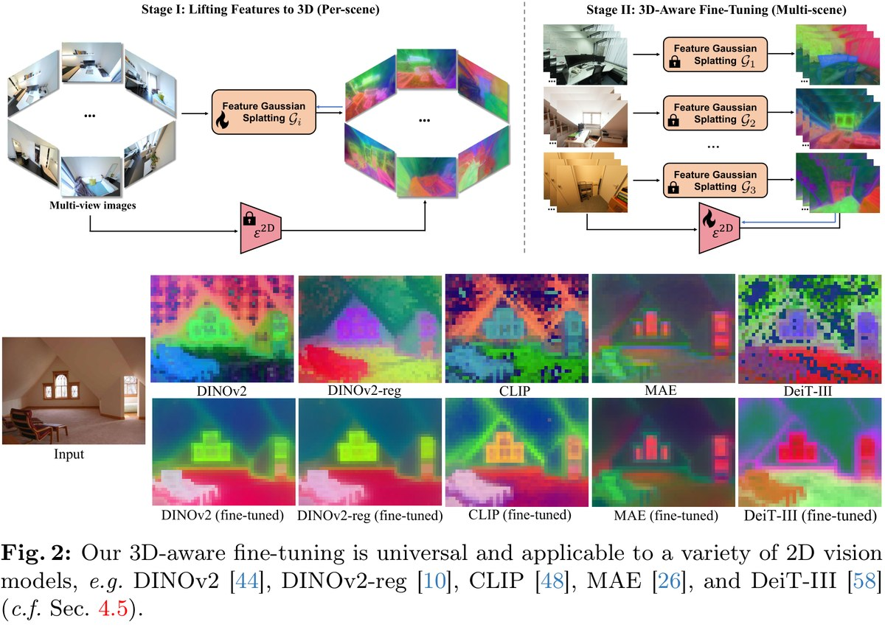
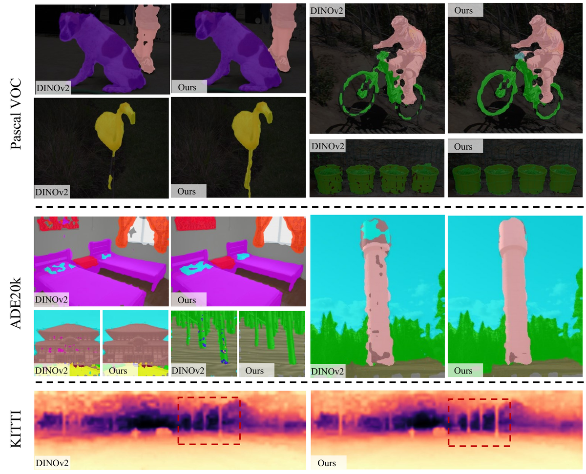

2D模型的3D感知能力简述
本文为大家简单梳理当前2D视觉模型如何获取3D感知能力（3D Awareness）的研究进展，包括3D数据类型、3D感知能力的意义、以及通过不同模态（文本、深度、多视图）赋予2D模型3D理解能力的代表性工作。
1 引言
人类天然生活在三维世界中。从婴儿时期开始，我们就通过具身体验（embodied experience）学会了理解3D空间关系：从2D视觉输入中想象3D结构、感知空间深度、理解多视角的一致性。

人类通过具身经验获得三种3D能力：2D-to-3D想象、空间感知、多视角一致性
然而，当前大部分2D视觉模型（如图像分类、目标检测、视觉语言模型等）缺乏对3D世界的理解能力。一个典型的例子是：视觉错觉图片可以轻松欺骗人类的视觉系统，而这正是因为我们依赖2D图像中的先验知识来"脑补"3D信息。对于AI模型来说，如何让2D模型具备类似的3D感知能力，是一个核心的研究问题。
模仿人类的范式，核心问题是：如何为2D模型发展出3D感知能力（3D-Awareness）？
2 3D数据类型
在讨论3D感知之前，首先需要了解3D数据有哪些类型。根据获取方式和表达形式，3D数据主要分为以下几类：
原始数据获取方式：
- 单目/双目相机：获取RGB图像或立体图像对
- 深度传感器：如激光雷达（LiDAR）、结构光，直接获取深度信息
3D数据表示形式：
- RGBD图像：在RGB图像基础上附加深度通道，是最容易获取的表面级3D表示
- 多视角图像（Multi-View Images）：同一场景在不同视角下的多张图像，提供了完整的3D场景信息
- 视频（Video）：天然的时序多视角数据，易于大规模采集
- 体素（Voxels）：D×H×W 的3D网格表示
- 网格（Mesh）：由顶点、边和面组成的表面表示

不同的3D数据表示形式：多视角图像、Mesh网格、NeRF体渲染等
3 3D感知能力能解决什么问题？
赋予2D模型3D感知能力有以下几方面的意义：
- 3D感知的图像模型：更好地理解"真实3D世界"和"相机位姿"，从而提升空间推理、场景理解等任务的性能
- 3D感知的视频模型：更好地理解"运动"和"物理规律"，例如物体轨迹追踪、动态场景理解
- 机器人：更好地理解"真实3D世界"，发展具身智能的空间感知能力
4 通过文本赋予3D感知：SpatialVLM
SpatialVLM: Endowing Vision-Language Models with Spatial Reasoning Capabilities, CVPR 2024
SpatialVLM 是一篇探索如何通过文本数据让视觉语言模型（VLM）具备空间推理能力的代表性工作。其核心思路是：构造大规模的空间关系问答数据，通过指令微调让VLM理解3D空间关系。

SpatialVLM 的数据构造和训练流程
具体而言，SpatialVLM 的方法是：
- 在1000万张室内图像上，利用深度估计和目标检测模型自动生成空间关系标注
- 基于模板构造了20亿条空间关系VQA数据
- 通过指令微调让VLM学习回答关于物体之间空间关系的问题

基于模板生成的20亿空间关系VQA数据
实验结果表明，经过空间数据训练后的VLM在定性的空间关系判断（如"A在B的左边"）和定量的空间关系推理（如"A和B之间的距离"）上都取得了显著提升。这说明通过文本形式的3D空间数据可以有效赋予VLM一定的空间推理能力，但这种方法的精度和效率仍然有限。
5 通过深度信息赋予3D感知：Depth Anything
Depth Anything: Unleashing the Power of Large-Scale Unlabeled Data, CVPR 2024
Depth Anything 是深度估计领域的代表性工作，其核心贡献是利用大规模无标注数据来训练强大的单目深度估计模型。RGBD数据作为一种表面级的3D表示，是赋予模型3D感知能力最直接的方式之一。

Depth Anything 的训练框架：结合有标注和无标注数据
Depth Anything 的训练策略如下：
- 有标注图像：（1）训练一个教师模型；（2）为编码器提供基础的深度估计能力
- 无标注图像：（1）为编码器提供更丰富的语义感知能力；（2）从DINOv2中蒸馏知识，提升泛化性
通过这种"少量有标注 + 大量无标注"的训练范式，Depth Anything 在各种场景下都展现出了强大的深度估计能力。后续的 Depth Anything v2（NeurIPS 2024）和 Depth Pro（ICLR 2025 in submission）进一步提升了精度和速度，基本实现了高质量的实时单目深度估计。

Depth Pro：在不到一秒内实现清晰的单目度量深度估计
深度估计作为基础的3D感知能力，已经发展为成熟的基础模型，为下游任务（如3D重建、空间理解、机器人导航等）提供了重要的感知支撑。
6 通过多视角图像赋予3D感知
6.1 Probe3D：评估基础模型的3D感知能力
Probing the 3D Awareness of Visual Foundation Models, CVPR 2024
在讨论如何赋予模型3D感知之前，首先需要一个评估框架来衡量模型当前的3D理解能力。Probe3D 提出了一套系统的评估方法：
- 单视图评估：通过探针（probing）的方式，评估模型特征中蕴含的深度和表面法向量信息
- 多视图评估：评估模型在不同视角之间的特征一致性

Probe3D 的评估方法：用解码器探测编码器的3D感知能力
评估结果揭示了一个关键发现：当前主流的ViT基础模型（如DINOv2）虽然具备强大的2D视觉理解能力，但其3D感知能力仍然有限。这引出了一个核心问题：如何为2D基础模型发展3D感知能力？
6.2 FiT3D：通过多视角图像微调DINOv2
Improving 2D Feature Representations by 3D-Aware Fine-Tuning, ECCV 2024
FiT3D 提出了一种高效且有效的方法，通过多视角图像对DINOv2进行微调，使其获得3D感知能力。

FiT3D：利用多视角一致性约束微调DINOv2
FiT3D 的核心设计：
- 模型：基于DINOv2-small进行微调
- 训练数据：ScanNet++ 数据集，230个场景、约14万张多视角图像
- 训练开销：在单张A100上全参数微调仅需8.5小时
- 核心思想：通过多视角之间的3D对应关系作为监督信号，让模型学习视角不变的3D感知特征

FiT3D 在语义分割和深度估计任务上的泛化性能
实验结果表明，FiT3D 微调后的模型在室内语义分割和深度估计任务上都取得了显著提升，并且这种3D感知能力可以泛化到分布外（OOD）数据集上。更重要的是，这种微调方法对其他基础模型同样有效，说明多视角一致性是赋予2D模型3D感知能力的一种通用且高效的方式。
7 更多探索方向
除了上述三种代表性方法，3D感知能力的研究还延伸到多个方向：
- 感知模型（Perception Models）：
- 多视角一致性：Probe3D [CVPR2024]、FiT3D [ECCV2024]、CONDENSE [ECCV2024 oral]、3DCorrEnhance [ICLR submission]
- 2D到3D提升：SpatialVLM [CVPR2024]、SpatialRGPT [NeurIPS2024]、Lift3D [CVPR2024]
- 生成模型（Generative Models）：
- 基于优化的方法：Zero-1-to-3 [ICCV2023]
- 基于多视角的生成：One-2-3-45 [NeurIPS2023]、CAT3D [NeurIPS2024 oral]
- 3D原生生成：LRM [ICLR2024]、Point-E [OpenAI 2022]
- 机器人（Robotics）：
- 多视角输入：F3RM [CoRL2023 Best Paper]
- 3D原生感知：SUGAR [CVPR2024]
8 总结
本文就2D模型的3D感知能力进行了简单的介绍，总结如下：
赋予3D感知的不同方式及其特点：
- 文本：简单易行，但效率低、精度有限
- RGBD：表面级3D表示，已发展出成熟的基础模型（如Depth Anything系列）
- 多视角图像：提供了完整的3D场景信息，是高效赋予3D感知的方式
- 视频：天然的时序数据，易于大规模扩展
3D感知能力的潜在影响：
- 图像模型：更好地理解真实3D世界和相机位姿
- 视频模型：更好地理解运动和物理规律
- 机器人：更好地理解真实3D世界，发展具身智能
简单讨论：
- 3D感知研究正在快速增长：从近年顶会的相关论文数量可以看出，3D视觉和3D感知正在成为计算机视觉的核心话题之一。
- 2D到3D是一个病态问题：从2D图像恢复3D信息本质上是不适定的（多个3D场景可以产生相同的2D图像），因此需要额外的约束和先验知识（如物理约束、世界知识），这也是为什么大规模数据驱动的方法在这个方向上尤为重要。
- 走向更好地理解真实世界：3D感知的终极目标是让AI模型像人类一样理解和推理3D物理世界，这对于具身智能、自动驾驶、AR/VR等应用至关重要。
参考文献
[1] Chen et al. SpatialVLM: Endowing Vision-Language Models with Spatial Reasoning Capabilities. CVPR 2024.
[2] Yang et al. Depth Anything: Unleashing the Power of Large-Scale Unlabeled Data. CVPR 2024.
[3] Yang et al. Depth Anything V2. NeurIPS 2024.
[4] Bochkovskii et al. Depth Pro: Sharp Monocular Metric Depth in Less Than a Second. ICLR 2025 submission.
[5] Garber et al. Probing the 3D Awareness of Visual Foundation Models (Probe3D). CVPR 2024.
[6] Zhai et al. Improving 2D Feature Representations by 3D-Aware Fine-Tuning (FiT3D). ECCV 2024.
[7] Yin et al. Metric3D: Towards Zero-shot Metric 3D Prediction from A Single Image. ICCV 2023.
[8] Yin et al. Metric3D v2: A Versatile Monocular Geometric Foundation Model. T-PAMI 2024.
[9] Cheng et al. SpatialRGPT: Grounded Spatial Reasoning in Vision Language Model. NeurIPS 2024.
[10] Gao et al. CAT3D: Create Anything in 3D with Multi-View Diffusion Models. NeurIPS 2024 oral.
[11] Pokle et al. CONDENSE: Consistent 2D/3D Pre-training for Dense and Sparse Features from Multi-View Images. ECCV 2024 oral.
[12] Liu et al. Zero-1-to-3: Zero-shot One Image to 3D Object. ICCV 2023.
[13] Liu et al. One-2-3-45: Any Single Image to 3D Mesh in 45 Seconds without Per-Shape Optimization. NeurIPS 2023.
[14] Hong et al. LRM: Large Reconstruction Model for Single Image to 3D. ICLR 2024.
[15] Shen et al. F3RM: Feature Fields for Robotic Manipulation. CoRL 2023 Best Paper.
Based on a presentation given on 2024-12-18.
本文阅读量： 次